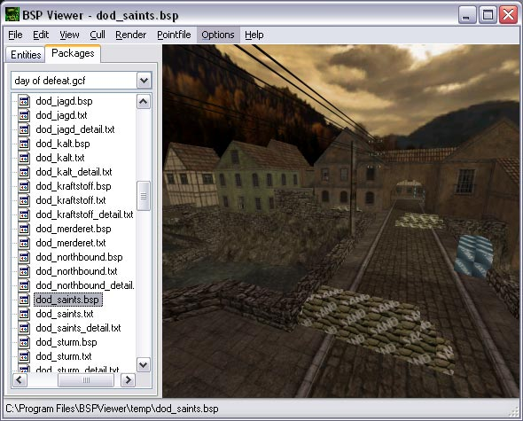
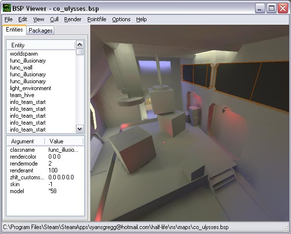
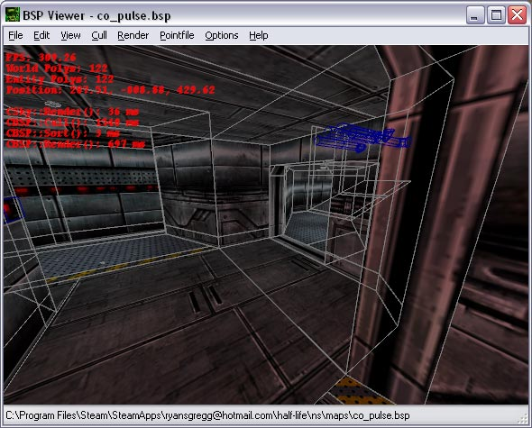
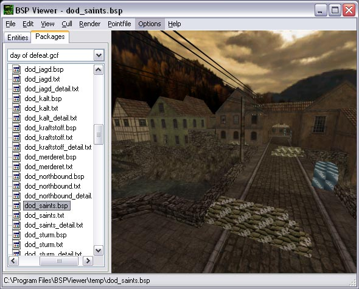
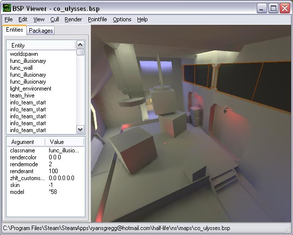
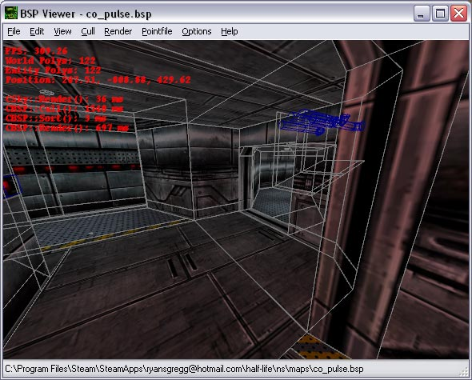

About
BSP Viewer - NemPosted: Apr 17th, 2004 - 5:03:52 pm
About:




Features:
BSP Viewer is a utility designed for mappers for previewing Half-Life 1 .bsp files and technical information about how they are being rendered. This is meant to help mappers find problem areas in their BSP files that need to be optimized.
BSP Viewer has been superseded by Crafty, my new Half-Life 1 and Half-Life 2 .bsp, .gl, .map, .mdl, .rmf and .vmf viewer. Crafty can be found here.
Screenshots:



- Optional rendering of textures, lighting, entities, special textures, transparent textures and sorting.
- Edge viewing and clipping.
- Optional use of VIS, frustum and backface culling.
- Scene freezing.
- Optional rendering of entities in special render modes.
- Real time entity editing.
- Entity picking.
- GCF loading.
- PTS loading.
- Exports .3ds, .map, .xsi, .ent and .bmp files.
- Scene information viewing.
- Supports .bsp files without VIS or RAD information
- Recent .bsp file menu.
- Quick and easy setup.
- 100% Free.
Modified: Aug 8th, 2006 - 3:49:03 pm[ 158594 Views ]
1. QwertyAccessPosted: Jun 5th, 2004 - 11:15:57 am
Woah this is cool :o
2. iizraelPosted: Apr 21st, 2005 - 6:21:57 pm
3. NonStopableForcePosted: Apr 26th, 2005 - 9:36:56 pm
Any news when one will be out for Hl2?
4. XTian109Posted: May 18th, 2005 - 5:18:36 am
Can't wait 4 HL2 version. Promise 2 send donation when i get some work.
U lot R godsends. Thanx
U lot R godsends. Thanx
5. NemPosted: May 19th, 2005 - 1:42:15 pm
As I've said before, I have so many other projects right now that a HL2 .bsp viewer
isn't going to happen for a while.
TG v4 is my current priority, it's framework (engine, file system and material system) should prove useful for a HL2 .bsp viewer.
TG v4 is my current priority, it's framework (engine, file system and material system) should prove useful for a HL2 .bsp viewer.
6. DarkPosted: May 19th, 2005 - 4:12:26 pm
I've found your BspViewer very useful.
May be some donation can change your priorities to make HL2 bspviewer earlier.
If there is such sum and you are intersted in my suggestion then e-mail me.
Thanks.
May be some donation can change your priorities to make HL2 bspviewer earlier.
If there is such sum and you are intersted in my suggestion then e-mail me.
Thanks.
7. SilencerModified: May 25th, 2005 - 9:39:55 pm
hope the transition of the old engine to the new goes well for your bsp viewer nem
the whole valve community is waking up to your programs!
i'm glad valve built upon the code they had for hl1 and not starting over :)
=[SA]=Silencer
i'm glad valve built upon the code they had for hl1 and not starting over :)
=[SA]=Silencer
8. NemModified: May 27th, 2005 - 12:45:41 pm
Fine! I'll write one already. Enough people have asked me...
First days work:

My plan is to allow it to view multiple file formats (.bsp, .mdl, .vmf etc.).
First days work:
My plan is to allow it to view multiple file formats (.bsp, .mdl, .vmf etc.).
9. donkey_puncherModified: May 29th, 2005 - 11:19:37 pm
looking forward to bsp edit 2005. maybe you could write a app to convert .mdl's and
vmf's into .smds(3ds max 7). ive exported to .dxf and tried it that way but i cant figure out the
texture alignments. anyway keep up the good work.
cheers
cheers
11. SilencerPosted: Jun 19th, 2005 - 12:54:40 am
looks good so far keep up the good work nem :) 
12. NonStopableForcePosted: Jul 11th, 2005 - 11:16:13 pm
Any thing new on the hl2/css version?
-NSF
-NSF
13. HalfBrainPosted: Jul 18th, 2005 - 12:27:46 pm
My god, I really hope you will do bsp, mdl, vmf, anything viewer. This will be great
jump for some of my machinima work and - of course - whole hl2 community. And TG4, man, I will mary you.
No, wait, I will be you friend till the end of our digital lives.
14. NemPosted: Jul 18th, 2005 - 10:07:55 pm
There is a screen shot on this
page. To be honest I haven't done anything since then, just been to bloody busy (it's summer!).
Anyways, will try to finish it off soon.
15. _KaszpiR_Posted: Nov 4th, 2005 - 9:47:52 am
The screenshots how to configure it under Steam, sorry it is in my native langauge,
but i guess the images are understandable enought for anyone else
http://hlds.pl/page.php?id=28&pg=3
http://hlds.pl/page.php?id=28&pg=3
16. veninPosted: Jan 14th, 2006 - 7:34:55
pm
Abouth the option to export maps in 3ds file..well the 3ds file cand be imported in
millkshape and softimage/XSI mod tool...in 3dsmax nothing, dosen`t work for it. Could you fix so the
format of the 3ds can be of that, that 3dsmax imports it? It would mean the wolrd to me :D...pls
17. NemPosted: Jan 16th, 2006 - 6:02:25 pm
It's a problem with the lib3ds library BSPViewer uses. If you can import into other
3D packages you could try exporting to a different format from them.
18. TaliaPosted: Feb 5th, 2006 - 12:36:56
am
Uhm. I have a pre-steam version of HL (HL 1.1.1.0 to be exact) and I can't for the
life of me get this configured to read the wad files.
Can you tell me what paths it's trying to read the wad in?
Can you tell me what paths it's trying to read the wad in?
19. NemPosted: Feb 5th, 2006 - 2:45:56 am
The current version does not support WON installations, email me at ryansgregg@hotmail.com
and I'll send you the last version that did.
20. NerdIIIPosted: Mar 14th, 2006 - 12:47:12
pm
It works like a charme and the lightmaps are aligned properly as well. ^^
I especially like the option to freeze the visibility algorithm.
There is one question I'd like to ask you: Why do you use .NET?
Because it's safer in terms of memory leaks?
Because it is future oriented and you like the latest wizbang?
Because it's 'platform independent'?
I especially like the option to freeze the visibility algorithm.
There is one question I'd like to ask you: Why do you use .NET?
Because it's safer in terms of memory leaks?
Because it is future oriented and you like the latest wizbang?
Because it's 'platform independent'?
21. BluefangPosted: Mar 14th, 2006 - 2:29:21
pm
I would think that the answer to that is because it's easier to write and manage code
with .NET.
22. NemPosted: Mar 14th, 2006 - 4:35:42 pm
I use it because I prefer to write C++ code, and managed .NET code can interop
transparently with unmanaged C++ code. This means I can write "normal" C++ code and still take
advantage of the .NET framework which I use mainly for its ability to write complex user interfaces with
very little effort (as well as other services like cryptology and networking).
As for your points:
Unmanaged code C++ does not use the garbage collector.
Upgrading C++ code from v1.1 to v2.0 is a HUGE pain in the ass (hopefully this will not reoccur in v3.0).
Managed C++ is not platform independent, only purely managed code is (C# and VB); unfortunately most my code is locked to Windows, though my unmanaged C++ code (which makes up the core of most projects) can be ported.
As for your points:
Unmanaged code C++ does not use the garbage collector.
Upgrading C++ code from v1.1 to v2.0 is a HUGE pain in the ass (hopefully this will not reoccur in v3.0).
Managed C++ is not platform independent, only purely managed code is (C# and VB); unfortunately most my code is locked to Windows, though my unmanaged C++ code (which makes up the core of most projects) can be ported.
23. NerdIIIPosted: Mar 14th, 2006 - 6:06:11
pm
Ok, I see. I wondered why a good coder with lots of C++ code from Valve's SDK would
convert it all to C#. But honestly MFC is not too shiny when it comes to complex user interfaces. I made
friends with Delphi early, which both easy to use and fast and compact and ... the third language in the
list that supports managed .NET code. ;)
24. NemPosted: Mar 14th, 2006 - 7:37:58 pm
Ah yes, Delphi is a great development platform, I used it for Batch Compiler before I
converted it to C#, the only thing I don't really like about it is its syntax.
25. joselitosnPosted: Mar 19th, 2006 - 11:52:32
am
Version 1.5.5 give this error:
Invalid Hllib.dll version number.
Made a fresh install for it, and i have winxp home sp1 with .net 2.0 installed
Invalid Hllib.dll version number.
Made a fresh install for it, and i have winxp home sp1 with .net 2.0 installed
26. NemModified: Mar 19th, 2006 - 12:35:53 pm
Sorry, fixed the installer, and you don't need .NET v2.0...
27. ertPosted: Mar 24th, 2006 - 7:35:35 pm
Could you add an entity search function to the bsp viewer, it doesn't need to be any
more advanced than Hammer's function (allows you to search by keys or values on their own or as KV
pairs, and supports partial matches). Would be nice (but not essential) it you could right click on keys
or values in the lower-left pane and it would give you the option to automatically search for say a
target field.
Also when you click on an entity in the list, its hard to find it in the 3d view. Because the thin orange lines used to highlight an entity don't stand out too well. There should be a setting to control the thickness and colour of these lines, should be pretty simple to do and it would solve the problem nicely :)
And finally, the draw distance should be increased to at least 14200 so that you can see everything, even when looking from one corner of the map to the other.
Nice work btw.
Also when you click on an entity in the list, its hard to find it in the 3d view. Because the thin orange lines used to highlight an entity don't stand out too well. There should be a setting to control the thickness and colour of these lines, should be pretty simple to do and it would solve the problem nicely :)
And finally, the draw distance should be increased to at least 14200 so that you can see everything, even when looking from one corner of the map to the other.
Nice work btw.
28. redcometPosted: Apr 3rd, 2006 - 5:57:36
am
Any chance of getting this program to export into vmf format? Or at least map format
where you make the walls solid and not made out of numerous 1 unit thick faces?
This could be an excelant tool for converting half life 1 maps to source.
I have been working on a map to vmf converter, and I found your program. It made me a bit frustrated to be able to walk around the map like I was in half life, all the blocks solid and not made of 1 unit think walls, I hoped that you would export that kind of format into the map file. Unfortunetly you do not. So I ask why you do not, and if there a chance for you to consider making them solid and save me a great deal of work and grey hairs :)
Excelant program though, by far the best half life program I have ever used.
This could be an excelant tool for converting half life 1 maps to source.
I have been working on a map to vmf converter, and I found your program. It made me a bit frustrated to be able to walk around the map like I was in half life, all the blocks solid and not made of 1 unit think walls, I hoped that you would export that kind of format into the map file. Unfortunetly you do not. So I ask why you do not, and if there a chance for you to consider making them solid and save me a great deal of work and grey hairs :)
Excelant program though, by far the best half life program I have ever used.
29. NemPosted: Apr 3rd, 2006 - 5:04:16 pm
ert:
I'm not planning on updating BSP Viewer any more, instead Crafty will replace it. Currently Crafty doesn't render Half-Life .bsp files as well as BSP Viewer or offer as many options, but this will be corrected when it leaves Alpha. I will try to incorporate your suggestions into it.
redcomet:
As I said, I'm not planning to update BSP Viewer any more, but I'm not sure I see the point of exporting .vmf files. There is no good conversion between mesh geometry (.bsp files) and additive geometry (.map and .vmf files) which is why .map exportation sucks. Is there some reason you can't import the .map files BSP Viewer into Hammer?
I'm not planning on updating BSP Viewer any more, instead Crafty will replace it. Currently Crafty doesn't render Half-Life .bsp files as well as BSP Viewer or offer as many options, but this will be corrected when it leaves Alpha. I will try to incorporate your suggestions into it.
redcomet:
As I said, I'm not planning to update BSP Viewer any more, but I'm not sure I see the point of exporting .vmf files. There is no good conversion between mesh geometry (.bsp files) and additive geometry (.map and .vmf files) which is why .map exportation sucks. Is there some reason you can't import the .map files BSP Viewer into Hammer?
30. redcometModified: Apr 3rd, 2006 - 10:32:05
pm
Well yes, I can import the map files into hammer. But it takes a bit of trickery.
When you export the map file you add a bunch of useless spaces,
ie,
{
{
(292902, 222, 3333) etc
(etc)
}
}
Which hammer and MapFool cannot read, I have to go in and replace all double spaces with nothing to end up with this:
{
}
(28238483 34342 2233) etc
(etc)
}
}
I use Map Fool to be able to process the textures into vmf's so I look at the map in hammer not grey walls.
But the main problem is that when you export the map files you take all the solids and hollow them all by 1 unit. So a simple block becomes a 6 faced cube with 1 unit thick walls...
I know that all decompilers do this, but I was using your program and I looks at the walls your BSP class generates and they are solid, not made of numerous 1 unit thick walls. And I can not help thinking that somewhere in your program, instead of making the map file solids off of the right, display size solids, you are taking the real solids and making them 6 faces 1 unit hollowed blocks. Or you are read straight from the bsp and not from the nice map you build in the program.
In either case, I find it extremly frustrating.
In hammer, it does not build map files created by decompilers such as bsp2map and this because of all the solids that insect (tjuncs), which are created by the 1 unit thick walls. What we have to do to convert maps is first get the map file, load it into hammer, and before we can even compile it to look around we have resize all the walls to replace the 6 1 unit thick blocks with 1 solid block.
ie,
Code:
{
{
(292902, 222, 3333) etc
(etc)
}
}
Which hammer and MapFool cannot read, I have to go in and replace all double spaces with nothing to end up with this:
{
}
(28238483 34342 2233) etc
(etc)
}
}
I use Map Fool to be able to process the textures into vmf's so I look at the map in hammer not grey walls.
But the main problem is that when you export the map files you take all the solids and hollow them all by 1 unit. So a simple block becomes a 6 faced cube with 1 unit thick walls...
I know that all decompilers do this, but I was using your program and I looks at the walls your BSP class generates and they are solid, not made of numerous 1 unit thick walls. And I can not help thinking that somewhere in your program, instead of making the map file solids off of the right, display size solids, you are taking the real solids and making them 6 faces 1 unit hollowed blocks. Or you are read straight from the bsp and not from the nice map you build in the program.
In either case, I find it extremly frustrating.
In hammer, it does not build map files created by decompilers such as bsp2map and this because of all the solids that insect (tjuncs), which are created by the 1 unit thick walls. What we have to do to convert maps is first get the map file, load it into hammer, and before we can even compile it to look around we have resize all the walls to replace the 6 1 unit thick blocks with 1 solid block.
31. NemModified: Apr 3rd, 2006 - 11:03:53 pm
Ah, I see (I would have thought those tools could parse the white space,
weird).
Anyways, the reason BSP Viewer exports 1 unit thick brushes is because the CSG process destroys the brushes you see in Hammer (or whatever editor you use) and converts them into a polygon soup. This process is NOT reversible. A brush (in Hammer) is a convex collection of planes that, when intersected, form polygons. When these planes are removed or split by the CSG process, the original brush is gone forever. BSP Viewer's approach is to say to hell with the brushes and construct a new brush for each face in the BSP (hence the 1 unit brushes). Other programs (such as WinBSPC) construct one large brush that engulfs the entire world, then "hollow" it out subtracting the BSP geometry and breaking up the brush into smaller convex brushes. This process creates more "brush like" results, but is still nothing close to how one would actually map.
This is why there are no good BSP decompilers, it is a really hard problem to solve. Half-Life 2 has a better BSP decompiler (VMEX) but only because the original brushes are stored in the BSP along with the CSG polygon soup.
Anyways, the reason BSP Viewer exports 1 unit thick brushes is because the CSG process destroys the brushes you see in Hammer (or whatever editor you use) and converts them into a polygon soup. This process is NOT reversible. A brush (in Hammer) is a convex collection of planes that, when intersected, form polygons. When these planes are removed or split by the CSG process, the original brush is gone forever. BSP Viewer's approach is to say to hell with the brushes and construct a new brush for each face in the BSP (hence the 1 unit brushes). Other programs (such as WinBSPC) construct one large brush that engulfs the entire world, then "hollow" it out subtracting the BSP geometry and breaking up the brush into smaller convex brushes. This process creates more "brush like" results, but is still nothing close to how one would actually map.
This is why there are no good BSP decompilers, it is a really hard problem to solve. Half-Life 2 has a better BSP decompiler (VMEX) but only because the original brushes are stored in the BSP along with the CSG polygon soup.
32. redcometModified: Apr 3rd, 2006 - 11:49:09
pm
Yes I understand now, I read some of your comments on the Map file Format on VERC and
looked at the source.
I understand that what you are doing is reading the bsp, constructing the normals and distances, etc, and building a brush. However, I do see an approach that can make good map files.
What I realized from looking at these map files you generate is that each section describes a face, not a brush. So when hammer loads it I assume it screws with it and forces it to be atleast 1 unit thick and then it interects with the other 'faces' you wrote to the map file. But why not do this instead of writing faces as if they were brushes.
You have good solids inside your program, and I know that the map file format is to read three points from the line, generate a normal and distance to get a plane, which it then used with the other 5 lines to calculate a volumn for the total brush. Your program does this, but when saving the map file it saves each face as a brush, with each face getting its own 6 line segment in the map file.
Why not instead, forget the original bsp, and make the map file off of your displayed map. For instance, I am not 100% sure on the process yet, but take a face on one of the solids, define three points somewhere on it, and write that line to the map file. Then move onto the next face, define three points on it, then write the next line. And do that for all 6 lines on a segment. That way when hammer goes to make the normals and planes, one brush is defined by 1 segment instead of 6, which causes the 1 unit thick walls.
Now that I know whats up, I downloaded your map view source, and though I will have a much harder time trying to convert a 6 segment solid into a 1 segment solid, I am going to start trying to write a program that will do it. It might take some tinkering, but I a sure that when a program that actually makes solids instead of faces will become imensly popular. I know me and my mod crew will use it a lot.
Which by the way, in your map view source, there is a typo.
In the MapViewer.rc file you incude resource2.h, and not resource.h which is what exsists, Resource2 doesnt. If doesnt compile right off the bat, but when I changed the MapViewer.rc file it worked.
I understand that what you are doing is reading the bsp, constructing the normals and distances, etc, and building a brush. However, I do see an approach that can make good map files.
What I realized from looking at these map files you generate is that each section describes a face, not a brush. So when hammer loads it I assume it screws with it and forces it to be atleast 1 unit thick and then it interects with the other 'faces' you wrote to the map file. But why not do this instead of writing faces as if they were brushes.
You have good solids inside your program, and I know that the map file format is to read three points from the line, generate a normal and distance to get a plane, which it then used with the other 5 lines to calculate a volumn for the total brush. Your program does this, but when saving the map file it saves each face as a brush, with each face getting its own 6 line segment in the map file.
Why not instead, forget the original bsp, and make the map file off of your displayed map. For instance, I am not 100% sure on the process yet, but take a face on one of the solids, define three points somewhere on it, and write that line to the map file. Then move onto the next face, define three points on it, then write the next line. And do that for all 6 lines on a segment. That way when hammer goes to make the normals and planes, one brush is defined by 1 segment instead of 6, which causes the 1 unit thick walls.
Now that I know whats up, I downloaded your map view source, and though I will have a much harder time trying to convert a 6 segment solid into a 1 segment solid, I am going to start trying to write a program that will do it. It might take some tinkering, but I a sure that when a program that actually makes solids instead of faces will become imensly popular. I know me and my mod crew will use it a lot.
Which by the way, in your map view source, there is a typo.
In the MapViewer.rc file you incude resource2.h, and not resource.h which is what exsists, Resource2 doesnt. If doesnt compile right off the bat, but when I changed the MapViewer.rc file it worked.
33. NemPosted: Apr 4th, 2006 - 11:23:06 am
I'm not sure if I fully understand you (or maybe you don't fully understand me).
Brushes, by nature, must be convex. But
BSPs contain a polygon soup which is anything but convex. The only logical grouping of faces in a BSP is
into leaf-nodes, which are collections of near by faces. However, these leaf-nodes are concave by nature
and so can't be used to construct a brush. It's not just a matter of taking a bunch of faces and
combining them into a brush, therein lies the problem!
BTW, MAP Viewer's source is old and quite poor.
BTW, MAP Viewer's source is old and quite poor.
34. redcometPosted: Apr 4th, 2006 - 11:56:07
am
I know that going from bsp to map is difficult, and most decompilers fail with their
1 unit walls. I discovered that what they are doing is describing each face in the map file. The regular
map file format is supposed to start with a {, then go for 6 lines in which is describes 6 faces for a
solid. Then when it loads the map it finds the normal, dot product, etc, you know all
this.
What you and other decompilers do is instead of using those 6 lines to describe a full solid (like a wall) you use these sections, denoted by the {}'s to describe each face. So instead of this:
{
(a face)
(a face)
(a face)
(a face)
(a face)
(a face)
}
you generate this:
{
(a face of a face)
(a face of a face)
(a face of a face)
(a face of a face)
(a face of a face)
(a face of a face)
}
{
(a face of a face)
(a face of a face)
(a face of a face)
(a face of a face)
(a face of a face)
(a face of a face)
}
{
(a face of a face)
(a face of a face)
(a face of a face)
(a face of a face)
(a face of a face)
(a face of a face)
}
{
(a face of a face)
(a face of a face)
(a face of a face)
(a face of a face)
(a face of a face)
(a face of a face)
}
etc..
And together these 6 sections you create actually represent one solid. So in hammer's eyes it seems like you are creating numerous solids to build a solid. Instead of numerous faces to make a face.
I do not know if I can explain it better :( But thats sort of not important.
What I get, is that going from bsp to map is very hard.
But what I see is you creating a 3d world with the bsp.
A 3d world with vertices and planes and solid walls
So what I am saying is that instead of going bsp to map, go bsp to 3d world to map.
Use the coords you can pick up off of the display to go backwards through the vector normalize/dot product loop you described in VERC
http://collective.valve-erc.com/index.php?go=map_format
to build a good map file.
What you and other decompilers do is instead of using those 6 lines to describe a full solid (like a wall) you use these sections, denoted by the {}'s to describe each face. So instead of this:
Code:
{
(a face)
(a face)
(a face)
(a face)
(a face)
(a face)
}
you generate this:
Code:
{
(a face of a face)
(a face of a face)
(a face of a face)
(a face of a face)
(a face of a face)
(a face of a face)
}
{
(a face of a face)
(a face of a face)
(a face of a face)
(a face of a face)
(a face of a face)
(a face of a face)
}
{
(a face of a face)
(a face of a face)
(a face of a face)
(a face of a face)
(a face of a face)
(a face of a face)
}
{
(a face of a face)
(a face of a face)
(a face of a face)
(a face of a face)
(a face of a face)
(a face of a face)
}
etc..
And together these 6 sections you create actually represent one solid. So in hammer's eyes it seems like you are creating numerous solids to build a solid. Instead of numerous faces to make a face.
I do not know if I can explain it better :( But thats sort of not important.
What I get, is that going from bsp to map is very hard.
But what I see is you creating a 3d world with the bsp.
A 3d world with vertices and planes and solid walls
So what I am saying is that instead of going bsp to map, go bsp to 3d world to map.
Use the coords you can pick up off of the display to go backwards through the vector normalize/dot product loop you described in VERC
http://collective.valve-erc.com/index.php?go=map_format
to build a good map file.
35. NemModified: Apr 5th, 2006 - 11:22:26 am
Well you clearly understand the problem, but the solution is a lot harder that simply
combining the faces.
Consider a single brush crate. If this brush was made an entity then yes, all six faces of the bush would be present in the BSP and you could easily construct one brush for the decompiled faces. However, if the crate is on the ground and a world brush, it would only have five faces, and it if was also against a wall, it would only have four, and if it was also in a corner, it would only have three, and if it also had another crate on top of it, it would only have two. Ignoring the fact that it is hard to know which faces make up the crate, in each case where there is a face missing, there are infinitely many ways to add faces to create a brush, and adding these faces must be done in such a way that doesn't protrude into the BSP (and makes sense). A lot of the time brushes are reduced to just one face in the BSP.
This brings us to the other problem. How do you know which faces should be part of a brush if they exist in a polygon soup? There is no way to know. You can estimate by checking proximity and whether or not combining faces results in a convex solid, but it is still a tricky problem.
Furthermore, the faces in a BSP are even more mangled by because they are split by other geometry and to produce smaller concave nodes (think of how a staircase splits up). These faces must be reunited in a convex manor, but again there are many ways of doing this.
I'm not trying to deter you from trying, I'm just trying to make sure you understand the problem and why I have never spent a lot of time trying to get BSP Viewer to export usable MAP files. Good luck!
Consider a single brush crate. If this brush was made an entity then yes, all six faces of the bush would be present in the BSP and you could easily construct one brush for the decompiled faces. However, if the crate is on the ground and a world brush, it would only have five faces, and it if was also against a wall, it would only have four, and if it was also in a corner, it would only have three, and if it also had another crate on top of it, it would only have two. Ignoring the fact that it is hard to know which faces make up the crate, in each case where there is a face missing, there are infinitely many ways to add faces to create a brush, and adding these faces must be done in such a way that doesn't protrude into the BSP (and makes sense). A lot of the time brushes are reduced to just one face in the BSP.
This brings us to the other problem. How do you know which faces should be part of a brush if they exist in a polygon soup? There is no way to know. You can estimate by checking proximity and whether or not combining faces results in a convex solid, but it is still a tricky problem.
Furthermore, the faces in a BSP are even more mangled by because they are split by other geometry and to produce smaller concave nodes (think of how a staircase splits up). These faces must be reunited in a convex manor, but again there are many ways of doing this.
I'm not trying to deter you from trying, I'm just trying to make sure you understand the problem and why I have never spent a lot of time trying to get BSP Viewer to export usable MAP files. Good luck!
36. redcometPosted: Apr 5th, 2006 - 1:25:59
am
Well I did not know about the face deletion problem.
I really wish I could sit down and write a good converter, unfortunetly I am getting swamped with different projects and other garbage I thought was done a long time ago..
I will continue thinking about it and maybe contributing tio a program little by little. I hate having my mappers go through and move all the walls from being 6 faces 1 unit hollow brushes to full walls. Thats why I asked. Your program seemed to do a very good job of constructing the solids.
I am still debating, I am not sure which is easier, a program that will read bad map files and convert them, or a program that will read 3d vertices from your 3d view and construct brushes off of that..
I really like that hollowing idea that you told me about, I decompiled a few maps with that program and got considerably better results. Its just to bad it doesn't work for most maps.
I really wish I could sit down and write a good converter, unfortunetly I am getting swamped with different projects and other garbage I thought was done a long time ago..
I will continue thinking about it and maybe contributing tio a program little by little. I hate having my mappers go through and move all the walls from being 6 faces 1 unit hollow brushes to full walls. Thats why I asked. Your program seemed to do a very good job of constructing the solids.
I am still debating, I am not sure which is easier, a program that will read bad map files and convert them, or a program that will read 3d vertices from your 3d view and construct brushes off of that..
I really like that hollowing idea that you told me about, I decompiled a few maps with that program and got considerably better results. Its just to bad it doesn't work for most maps.
37. edman747Posted: Nov 1st, 2007 - 10:21:16
am
hi, thanks Nem.
I really like bsb viewer. sometimes when loading one of the half-life single player maps(HLSP). using a pak0 everything is gray. so i just use the half-life.gcf then the map looks normal.
things like func_monsterclip, trigger_once and trigger_changelevel often have some weird texture applied to them? I have to fly through them to see the rest of the map.
now to the question: do you have a spawn point tool? Kinda like bsb viewer where I could fly to the spot where I want to put a spawn point and have a player model show up where each spawn point is.
if no, do you know of one? have used spawnpointeditor 1.3 by Michael.A.C.Pink
It has some utility but the wire frame display of the map. makes it hard to add multiple spawn points. very difficult on the HLSP maps where things can be kind of tight.
I really like bsb viewer. sometimes when loading one of the half-life single player maps(HLSP). using a pak0 everything is gray. so i just use the half-life.gcf then the map looks normal.
things like func_monsterclip, trigger_once and trigger_changelevel often have some weird texture applied to them? I have to fly through them to see the rest of the map.
now to the question: do you have a spawn point tool? Kinda like bsb viewer where I could fly to the spot where I want to put a spawn point and have a player model show up where each spawn point is.
if no, do you know of one? have used spawnpointeditor 1.3 by Michael.A.C.Pink
It has some utility but the wire frame display of the map. makes it hard to add multiple spawn points. very difficult on the HLSP maps where things can be kind of tight.
38. NemPosted: Nov 10th, 2007 - 12:04:43 pm
Kinda. In the entities tab, you can add and duplicate info_player_start entities
using the context menu. Once you have added your new spawns, you can export a .ent file from the File
menu, then import you entities back into your .bsp using ripent.
39. the-deadPosted: Feb 22nd, 2008 - 1:26:50
pm
I have a question to this program...
can i edit a map with it??? i have loded a bsp and now, i wanna edit and save. is this possible???
thx the-dead
can i edit a map with it??? i have loded a bsp and now, i wanna edit and save. is this possible???
thx the-dead
40. EanModified: Jun 16th, 2008 - 9:24:09
am
how do you export lightmaps? milkshape wont import the meshes and ac3d wont import
lightmaps. Also, I noticed the poly count is much higher in ac3d than bsp viewer (even with no culling)
41. NemPosted: Jun 17th, 2008 - 3:48:24 pm
BSP Viewer has been replaced by Crafty (which included the ability to export
lightmaps).
42. BourneModified: Mar 13th, 2010 - 5:55:23
pm
Everytime i try to open a .bsp i get the following error message, :
"Error loading BSP file: Invalid Half-Life BSP file format."
i have done everything correct and it still says that. Please help!
but everything else is perfect!
"Error loading BSP file: Invalid Half-Life BSP file format."
i have done everything correct and it still says that. Please help!
but everything else is perfect!
43. mabanPosted: Mar 13th, 2010 - 6:42:09
pm
BSP Viewer hasn't been updated in 4 years. Use Crafty instead.
44. BournePosted: Mar 13th, 2010 - 7:40:51
pm
oh, alright. thanks i was in a rush at the time
45. Patrick StarPosted: Nov 20th, 2011 - 11:44:16
pm
i decompile a map but none of the func_walls show up
46. adarhymePosted: Jan 7th, 2012 - 4:22:35
am
Dont download link!!!!
47. INsaneModified: Feb 21st, 2012 - 4:49:07
am
Found another use for this old tool, getting a old HL1 .bsp to VMF in the latest
hammer.
Some old maps decompile with decompilers and some don't, some have a lot of invalid structures and hammer will not open them, some do.
If you find nothing else works to get the old structure of a .bsp, try this....
The BSPViewer and Crafty .bsp to .map then to .vmf Method:
1. With BSPViewer. Open the .bsp file, go to "File" and Export select "MAP File", un-tick "Bevel Brushes" and "Use Null textures" OK and give it a name, save as a .map.
2. Now open that saved file with Crafty, select "File" and "Export", drop down the "Save as Type" select VMF, give it a name.
Open the VMF with Hammer, it may give an error about could not load some solids, just continue without them, (press "Yes") it will look nuts, all orange and heaps of 1 unit walls.
If you now go to the "VisGroups" and un-tick World Geometry what you may end up with are some structures like trees, tables, chairs, arches without a heap of walls in the way. These are Brush entities, that may be enough to start to build a source map from the old structure and have it very close to the same layout.
I know there are easy ways, this is only for HL1 maps that you keep getting crashes when trying to open a decompliled .map or .vmf, seems to get rid of a few bad eggs in the file.
More here:
http://www.dodbits.com/dods/index.php/hl2-mapping/61-porting-old-half-life-1-maps
Some old maps decompile with decompilers and some don't, some have a lot of invalid structures and hammer will not open them, some do.
If you find nothing else works to get the old structure of a .bsp, try this....
The BSPViewer and Crafty .bsp to .map then to .vmf Method:
1. With BSPViewer. Open the .bsp file, go to "File" and Export select "MAP File", un-tick "Bevel Brushes" and "Use Null textures" OK and give it a name, save as a .map.
2. Now open that saved file with Crafty, select "File" and "Export", drop down the "Save as Type" select VMF, give it a name.
Open the VMF with Hammer, it may give an error about could not load some solids, just continue without them, (press "Yes") it will look nuts, all orange and heaps of 1 unit walls.
If you now go to the "VisGroups" and un-tick World Geometry what you may end up with are some structures like trees, tables, chairs, arches without a heap of walls in the way. These are Brush entities, that may be enough to start to build a source map from the old structure and have it very close to the same layout.
I know there are easy ways, this is only for HL1 maps that you keep getting crashes when trying to open a decompliled .map or .vmf, seems to get rid of a few bad eggs in the file.
More here:
http://www.dodbits.com/dods/index.php/hl2-mapping/61-porting-old-half-life-1-maps
48. PancakeBreModified: Oct 8th, 2014 - 8:00:43
pm
Hi everyone, i'm tryng to convert "zs_Castle_keep.bsp" (workshop of source
filmaker) in OBJ, it opens but the viewer doesn't load any texture.
I tried to open the bps with the material browser and in it there all all the texture, so how can I load them with object viewer?
I tried to open the bps with the material browser and in it there all all the texture, so how can I load them with object viewer?
49. Gennaro-HLPosted: Feb 23rd, 2015 - 5:00:33
am
Hi, I have a problem with the "BSPViewer" I do not load the map textutas
(Crossfire.bsp)
ERROR: Failed to load gfx \ env \ 2desertft.tga.
Failed to load sky.
Any solution.

ERROR: Failed to load gfx \ env \ 2desertft.tga.
Failed to load sky.
Any solution.